Sự khác biệt giữa hai execution plan nhìn thấy rất rõ trong column “Rows”. Theo estimate của optimizer, query cuối cùng match 17 record. Tuy vậy, index scan trong execution plan thứ nhất trả về 333 row. Database sau đó phải load 333 row này từ table để áp dụng LIKE filter, làm kết quả giảm xuống còn 17 row. Trong execution plan thứ hai, index access ngay từ đầu đã không trả về những row đó, nên database chỉ phải thực hiện operation TABLE ACCESS BY INDEX ROWID 17 lần.
Bạn cũng nên lưu ý cost value của operation INDEX RANGE SCAN tăng từ 2 lên 3 vì column bổ sung làm index lớn hơn. Xét performance gain đạt được, đây là một compromise chấp nhận được.
Ví dụ đơn giản này dường như xác nhận common wisdom rằng nên index mọi column trong where clause. Tuy nhiên, “wisdom” này bỏ qua tầm quan trọng của column order, yếu tố quyết định condition nào có thể được dùng làm access predicate và vì vậy có ảnh hưởng rất lớn đến performance. Do đó, quyết định về column order không bao giờ nên để cho chance quyết định.
Index size cũng tăng theo số lượng column — đặc biệt khi thêm text column. Đương nhiên, index lớn hơn không làm performance tốt hơn, dù logarithmic scalability làm giảm đáng kể mức ảnh hưởng. Tuyệt đối không nên thêm tất cả column được nhắc đến trong where clause vào index; thay vào đó, chỉ dùng index filter predicate có chủ đích để giảm data volume ở một execution step sớm hơn.
Index-only scan là một trong những tuning method mạnh nhất. Nó không chỉ tránh access table để evaluate where clause, mà còn tránh hoàn toàn table access nếu database có thể tìm các column được select ngay trong index.
Để cover toàn bộ query, index phải chứa tất cả column từ SQL statement — đặc biệt là các column trong select clause như ví dụ sau:
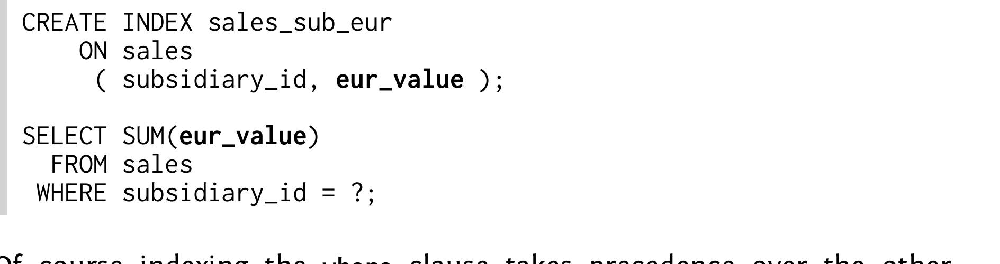
Indexing where clause đương nhiên được ưu tiên hơn các clause khác. Vì vậy, column SUBSIDIARY_ID nằm ở vị trí đầu tiên để đủ điều kiện làm access predicate.
Execution plan cho thấy index scan không có table access tiếp theo (TABLE ACCESS BY INDEX ROWID).
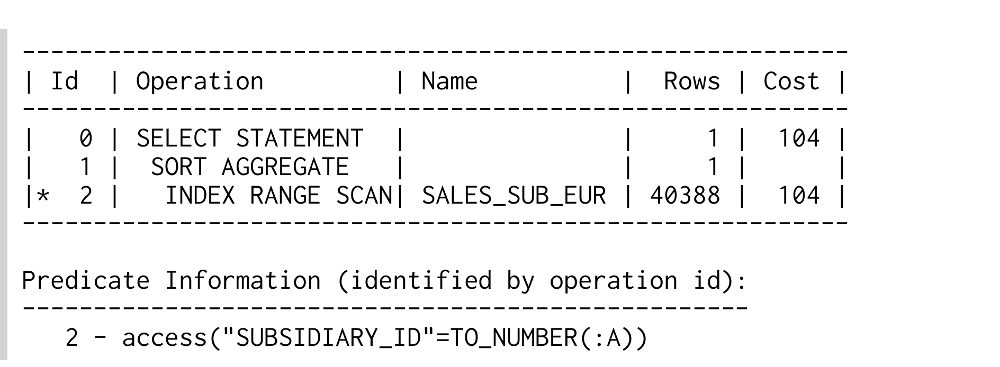
Index cover toàn bộ query nên còn được gọi là covering index.
Index có một bản copy của column EUR_VALUE nên database có thể sử dụng value được lưu trong index. Không cần access table vì index đã có toàn bộ thông tin để đáp ứng query.
Index-only scan có thể cải thiện performance rất lớn. Hãy nhìn row count estimate trong execution plan: optimizer dự kiến aggregate hơn 40,000 row. Điều đó có nghĩa index-only scan ngăn 40,000 table fetch — nếu mỗi row nằm trong một table block khác nhau. Nếu index có clustering factor tốt — tức là các row tương ứng được cluster trong một vài table block — lợi ích có thể thấp hơn đáng kể.
Ngoài clustering factor, số row được select cũng giới hạn performance gain tiềm năng của index-only scan. Chẳng hạn, nếu select một row duy nhất thì bạn chỉ tiết kiệm được một table access. Vì tree traversal cũng cần fetch một vài block, table access được tiết kiệm có thể trở nên không đáng kể.
Index-only scan là một indexing strategy mạnh tay. Đừng chỉ vì nghi ngờ mà thiết kế index cho index-only scan, vì cách đó sử dụng memory không cần thiết và làm tăng maintenance effort cần cho các update statement. Xem Chapter 8, “Modifying Data”. Trong thực tế, trước tiên bạn nên index mà không xét đến select clause, rồi chỉ mở rộng index nếu cần.
Index-only scan cũng có thể gây ra những bất ngờ khó chịu, chẳng hạn khi giới hạn query ở các sale gần đây:
Nếu không xem execution plan, người ta có thể kỳ vọng query chạy nhanh hơn vì nó select ít row hơn. Tuy nhiên, where clause tham chiếu đến một column không nằm trong index, nên database phải access table để load column này.
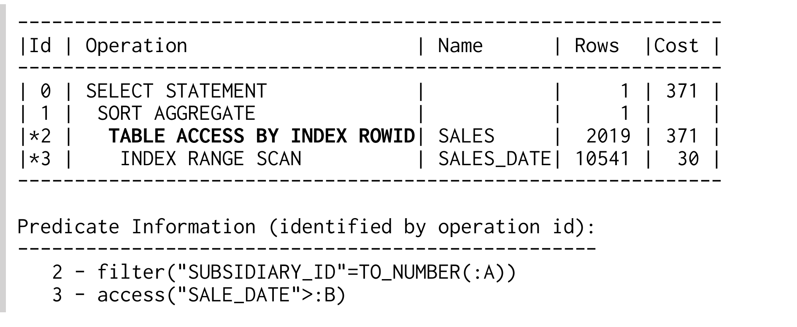
Table access làm tăng response time dù query select ít row hơn. Factor liên quan không phải số row query trả về, mà là số row database phải inspect để tìm chúng.
Nếu một index không còn được dùng cho index-only scan, optimizer sẽ chọn execution plan tốt tiếp theo. Điều đó có nghĩa optimizer có thể chọn một execution plan hoàn toàn khác hoặc, như ở trên, một execution plan tương tự nhưng dùng index khác. Trong trường hợp này, nó dùng index trên SALE_DATE, là phần còn lại từ chapter trước.
Từ góc nhìn của optimizer, index này có 2 advantage so với SALES_SUB_EUR. Optimizer cho rằng filter trên SALE_DATE có selectivity cao hơn filter trên SUBSIDIARY_ID. Bạn có thể thấy điều đó trong column “Rows” tương ứng của 2 execution plan gần nhất (khoảng 10,000 so với 40,000). Tuy nhiên, các estimation này hoàn toàn arbitrary vì query dùng bind parameter. Chẳng hạn, condition SALE_DATE có thể select toàn bộ table nếu truyền vào ngày của sale đầu tiên.
Advantage thứ hai của index SALES_DATE là nó có clustering factor tốt hơn. Đây là một lý do hợp lệ vì table SALES chỉ tăng theo chronological order. Row mới luôn được append vào cuối table nếu không có row nào bị delete. Vì vậy, table order tương ứng với index order vì cả hai được sort gần đúng theo chronological order — index có clustering factor tốt.
Khi dùng index có clustering factor tốt, các row được select được lưu gần nhau, nên database chỉ cần đọc một vài table block để lấy toàn bộ row. Dùng index này, query có thể đủ nhanh mà không cần index-only scan. Trong trường hợp đó, chúng ta nên gỡ các column không cần thiết khỏi index kia.
Trong ví dụ cụ thể này, có một happy coincidence. Filter mới trên SALE_DATE không chỉ ngăn index-only scan mà đồng thời còn mở ra một access path mới. Vì vậy optimizer có thể giới hạn performance impact của thay đổi này. Tuy nhiên, cũng có thể ngăn index-only scan bằng cách thêm column vào các clause khác. Việc thêm column vào select clause lại không bao giờ mở được một access path mới để hạn chế impact của việc mất index-only scan.
Function-based index cũng có thể gây bất ngờ khó chịu khi kết hợp với index-only scan. Index trên UPPER(last_name) không thể dùng cho index-only scan khi select column LAST_NAME. Ở section trước, đáng lẽ chúng ta phải index chính column LAST_NAME để hỗ trợ LIKE filter và cho phép dùng nó cho index-only scan khi select column LAST_NAME.
Các query aggregation như ví dụ trên là candidate tốt cho index-only scan. Chúng query nhiều row nhưng chỉ một vài column, nên một index mảnh là đủ để hỗ trợ index-only scan. Càng query nhiều column, bạn càng phải thêm nhiều column vào index để hỗ trợ index-only scan. Vì vậy, developer chỉ nên select những column thực sự cần.
Ngoài việc indexing nhiều row cần nhiều space, bạn cũng có thể chạm đến giới hạn của database. Hầu hết database đặt ra giới hạn khá cứng về số column mỗi index và tổng size của một index entry. Điều đó có nghĩa bạn không thể index số column tùy ý hoặc column có độ dài tùy ý. Overview sau đây liệt kê những giới hạn quan trọng nhất. Tuy vậy, vẫn có những index cover toàn bộ table như chúng ta sẽ thấy trong section tiếp theo.
MySQL 5.6 với InnoDB giới hạn mỗi column ở 767 byte và tổng tất cả column ở 3072 byte. Index MyISAM bị giới hạn ở 16 column và key length tối đa 1000 byte.
MySQL có một feature độc đáo gọi là “prefix indexing” (đôi khi còn gọi là “partial indexing”). Nghĩa là chỉ index một vài character đầu tiên của column — nên nó không liên quan gì đến partial index được mô tả trong Chapter 2. Nếu bạn index một column vượt quá column length cho phép (767 byte với InnoDB), MySQL tự động truncate column tương ứng. Đó là lý do create index statement vẫn thành công với warning “Specified key was too long; max key length is 767 bytes” khi bạn vượt giới hạn. Nghĩa là index không còn chứa full copy của column và vì vậy chỉ hữu ích hạn chế cho index-only scan (tương tự function-based index).
Bạn có thể dùng prefix indexing của MySQL một cách tường minh để tránh vượt quá total key length limit nếu gặp error message “Specified key was too long; max key length is [1000/3072] bytes.” Ví dụ sau chỉ index 10 character đầu tiên của column LAST_NAME.
Maximum index key length phụ thuộc vào block size và index storage parameter (75% database block size trừ một phần overhead). B-tree index bị giới hạn ở 32 column.
Khi dùng Oracle 11g với mọi default được giữ nguyên (8k block), maximum index key length là 6398 byte. Vượt quá giới hạn này gây ra error message “ORA-01450: maximum key length (6398) exceeded.”
Database PostgreSQL hỗ trợ index-only scan từ release 9.2.
Key length của B-tree index bị giới hạn ở 2713 byte (hardcoded, xấp xỉ BLCKSZ/3). Error message tương ứng “index row size ... exceeds btree maximum, 2713” chỉ xuất hiện khi execute một insert hoặc update vượt quá giới hạn. B-tree index có thể chứa tối đa 32 column.
SQL Server giới hạn key length ở 900 byte và 16 key column. Tuy nhiên, SQL Server có feature cho phép thêm column dài tùy ý vào index chỉ nhằm hỗ trợ index-only scan. Vì mục đích đó, SQL Server phân biệt key column và nonkey column.
Key column là các index column như đã thảo luận từ đầu. Nonkey column là các column bổ sung chỉ được lưu trong index leaf node. Nonkey column có thể dài tùy ý nhưng không thể dùng làm access predicate (seek predicate).
Nonkey column được định nghĩa bằng keyword include của create index command:
Index-only scan execute một SQL statement chỉ bằng redundant data được lưu trong index. Original data trong heap table không cần thiết. Nếu đẩy concept đó lên mức tiếp theo và đưa tất cả column vào index, bạn có thể tự hỏi tại sao chúng ta còn cần heap table.
Một số database thực sự có thể dùng index làm primary table store. Database Oracle gọi concept này là index-organized tables (IOT), còn database khác dùng thuật ngữ clustered index. Trong section này, cả hai thuật ngữ được dùng tùy theo việc muốn nhấn mạnh đặc điểm của table hay của index.
Như vậy, index-organized table là một B-tree index không có heap table. Điều này tạo ra 2 benefit: (1) tiết kiệm space cho heap structure; (2) mọi access trên clustered index tự động là một index-only scan. Cả hai benefit nghe đều hứa hẹn nhưng thực tế khó đạt được.
Nhược điểm của index-organized table trở nên rõ ràng khi tạo một index khác trên cùng table. Tương tự regular index, secondary index tham chiếu đến original table data — vốn được lưu trong clustered index. Ở đó, data không được lưu tĩnh như trong heap table mà có thể di chuyển bất kỳ lúc nào để duy trì index order. Vì vậy, không thể lưu physical location của row trong index-organized table vào secondary index. Thay vào đó database phải dùng logical key.
Các figure sau cho thấy một index lookup để tìm tất cả sale vào May 23rd 2012. Để so sánh, trước tiên chúng ta xem Figure 5.1, mô tả process khi dùng heap table. Execution gồm 2 bước: (1) INDEX RANGE SCAN; (2) TABLE ACCESS BY INDEX ROWID.
Figure 5.1. Index-Based Access trên Heap Table
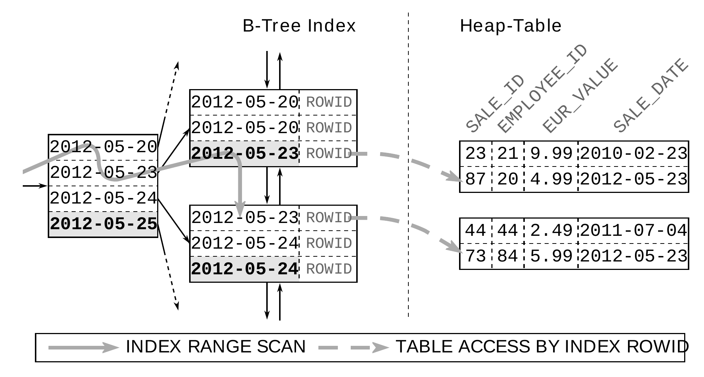
Dù table access có thể trở thành bottleneck, nó vẫn chỉ giới hạn ở một read operation mỗi row vì index có ROWID làm direct pointer đến table row. Database có thể load row ngay lập tức từ heap table vì index có exact position của row. Tuy nhiên, picture thay đổi khi dùng secondary index trên index-organized table. Secondary index không lưu physical pointer (ROWID), mà chỉ lưu key value của clustered index — cái gọi là clustering key. Thường đó là primary key của index-organized table.
Access secondary index không trả về ROWID mà trả về logical key để tìm kiếm clustered index. Tuy nhiên, một access là chưa đủ để tìm trong clustered index — cần full tree traversal. Nghĩa là access table thông qua secondary index sẽ search 2 index: secondary index một lần (INDEX RANGE SCAN), sau đó search clustered index cho mỗi row tìm thấy trong secondary index (INDEX UNIQUE SCAN).
Figure 5.2. Secondary Index trên một IOT
Figure 5.2 cho thấy rõ B-tree của clustered index nằm giữa secondary index và table data.
Access index-organized table thông qua secondary index rất inefficient, và có thể ngăn điều đó giống như cách ngăn table access trên heap table: dùng index-only scan — trong trường hợp này mô tả chính xác hơn là “secondary-index-only scan”. Performance advantage của index-only scan còn lớn hơn vì nó không chỉ ngăn một access mà ngăn toàn bộ INDEX UNIQUE SCAN.
Dùng ví dụ này, chúng ta cũng thấy database khai thác mọi redundancy mà nó có. Hãy nhớ rằng secondary index lưu clustering key cho mỗi index entry. Vì vậy, chúng ta có thể query clustering key từ secondary index mà không cần access index-organized table:
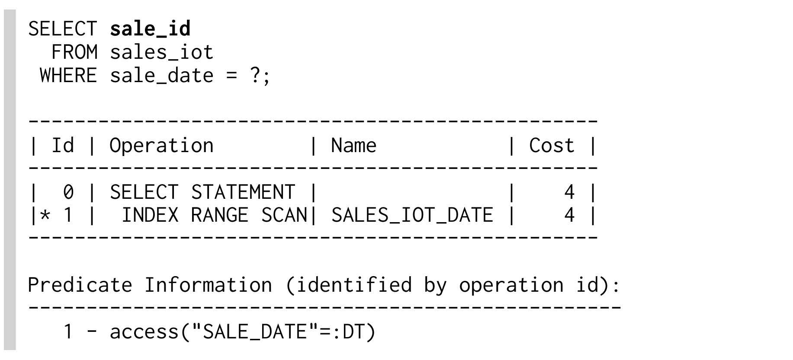
Table SALES_IOT là một index-organized table dùng SALE_ID làm clustering key. Dù index SALE_IOT_DATE chỉ nằm trên column SALE_DATE, nó vẫn có một bản copy của clustering key SALE_ID, nên có thể đáp ứng query chỉ bằng secondary index.
Khi select các column khác, database phải chạy một INDEX UNIQUE SCAN trên clustered index cho mỗi row:
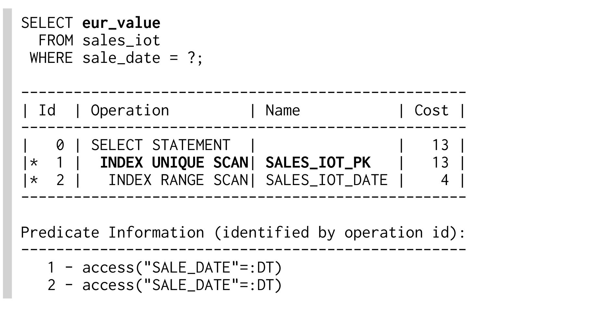
Index-organized table và clustered index, sau cùng, không hữu ích như ấn tượng ban đầu. Performance improvement trên clustered index dễ dàng mất đi khi dùng secondary index. Clustering key thường dài hơn ROWID, nên secondary index lớn hơn so với trên heap table, thường xóa bỏ phần space tiết kiệm được do không có heap table. Điểm mạnh của index-organized table và clustered index chủ yếu giới hạn ở những table không cần index thứ hai. Heap table có lợi thế cung cấp một master copy cố định, dễ tham chiếu.
Database support cho index-organized table và clustered index rất inconsistent. Overview ở trang tiếp theo giải thích những điểm đặc thù quan trọng nhất.
Engine MyISAM chỉ dùng heap table, trong khi engine InnoDB luôn dùng clustered index. Nghĩa là bạn không trực tiếp có quyền lựa chọn.
Database Oracle mặc định dùng heap table. Có thể tạo index-organized table bằng clause ORGANIZATION INDEX:
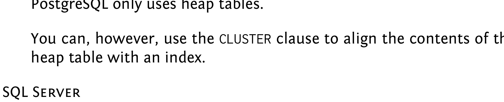
Database Oracle luôn dùng primary key làm clustering key.
PostgreSQL chỉ dùng heap table.
Tuy nhiên, bạn có thể dùng clause CLUSTER để căn chỉnh nội dung của heap table theo một index.
Mặc định SQL Server dùng clustered index (index-organized table), sử dụng primary key làm clustering key. Tuy nhiên, bạn có thể dùng column bất kỳ làm clustering key — kể cả column không unique.
Để tạo heap table, bạn phải dùng clause NONCLUSTERED trong primary key definition:
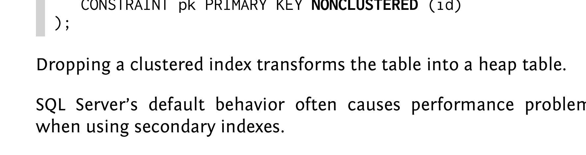
Drop một clustered index sẽ transform table thành heap table.
Behavior mặc định của SQL Server thường gây performance problem khi dùng secondary index.
Sorting là một operation tiêu tốn rất nhiều resource. Nó cần khá nhiều CPU time, nhưng vấn đề chính là database phải tạm thời buffer result. Sau cùng, sort operation phải đọc toàn bộ input trước khi có thể tạo output đầu tiên. Sort operation không thể execute theo pipelined manner — điều này có thể trở thành vấn đề với data set lớn.
Index cung cấp một ordered representation của indexed data: principle này đã được mô tả trong Chapter 1. Ta cũng có thể nói index lưu data theo dạng presorted. Thực tế index được sort giống như khi dùng index definition trong order by clause. Vì vậy, không có gì bất ngờ khi ta có thể dùng index để tránh sort operation nhằm đáp ứng order by clause.
Trớ trêu là INDEX RANGE SCAN cũng trở nên inefficient với data set lớn — đặc biệt khi theo sau là table access. Điều này có thể triệt tiêu phần tiết kiệm do tránh sort operation. Trong trường hợp này, FULL TABLE SCAN với explicit sort operation thậm chí có thể nhanh hơn. Một lần nữa, công việc của optimizer là đánh giá các execution plan khác nhau và chọn plan tốt nhất.
Indexed order by execution không chỉ tiết kiệm sorting effort; nó còn có thể trả về các result đầu tiên mà không cần xử lý toàn bộ input data. Vì vậy order by được execute theo pipelined manner. Chapter 7, “Partial Results”, giải thích cách khai thác pipelined execution để implement pagination query hiệu quả. Điều này khiến pipelined order by quan trọng đến mức tôi gọi nó là power thứ ba của indexing.
Chapter này giải thích cách dùng index cho pipelined order by execution. Để làm vậy, chúng ta phải đặc biệt chú ý đến tương tác với where clause cũng như modifier ASC và DESC. Chapter kết thúc bằng việc áp dụng các kỹ thuật này cho group by clause.
SQL query có order by clause không cần explicit sort result nếu relevant index đã trả về row theo đúng order cần thiết. Nghĩa là cùng index được dùng cho where clause cũng phải cover order by clause.
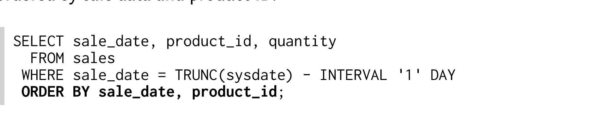
Đã có index trên SALE_DATE có thể dùng cho where clause. Tuy nhiên, database phải thực hiện explicit sort operation để đáp ứng order by clause:
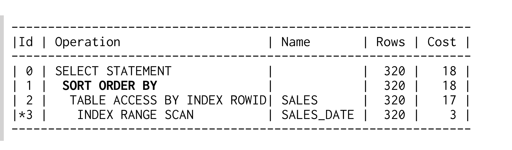
INDEX RANGE SCAN vốn đã trả result theo index order. Để tận dụng điều này, chúng ta chỉ cần mở rộng index definition để nó tương ứng với order by clause:
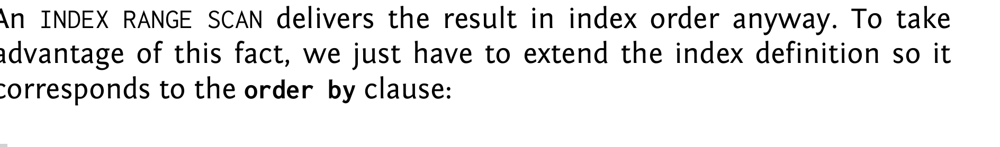
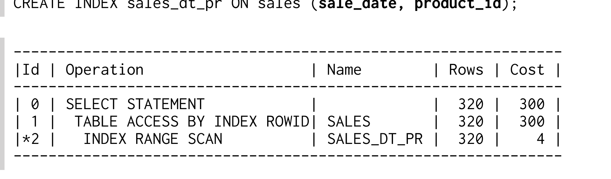
Sort operation SORT ORDER BY biến mất khỏi execution plan dù query vẫn có order by clause. Database khai thác index order và bỏ qua explicit sort operation.
Dù execution plan mới có ít operation hơn, cost value lại tăng đáng kể vì clustering factor của index mới tệ hơn (xem “Automatically Optimized Clustering Factor” ở page 133). Ở thời điểm này chỉ cần ghi nhận rằng cost value không phải lúc nào cũng là indicator tốt cho execution effort.
Với optimization này, chỉ cần scanned index range được sort theo order by clause. Vì vậy, optimization cũng hoạt động trong ví dụ cụ thể này khi chỉ sort theo PRODUCT_ID:
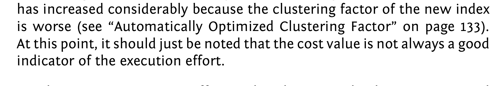
Trong Figure 6.1, ta thấy PRODUCT_ID là sort criterion duy nhất liên quan trong scanned index range. Do đó index order tương ứng với order by clause trong index range này, nên database có thể bỏ qua sort operation.
Figure 6.1. Sort Order trong Relevant Index Range
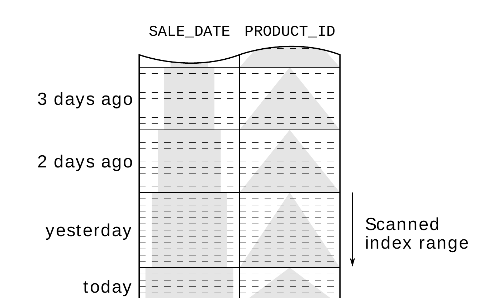
Optimization này có thể gây behavior bất ngờ khi mở rộng scanned index range:
Query này không lấy sale của yesterday mà lấy tất cả sale kể từ yesterday. Nghĩa là nó cover nhiều ngày và scan một index range không chỉ được sort theo PRODUCT_ID. Nếu nhìn lại Figure 6.1 và mở rộng scanned index range xuống dưới, ta sẽ thấy lại có các PRODUCT_ID value nhỏ hơn. Vì vậy database phải dùng explicit sort operation để đáp ứng order by clause.
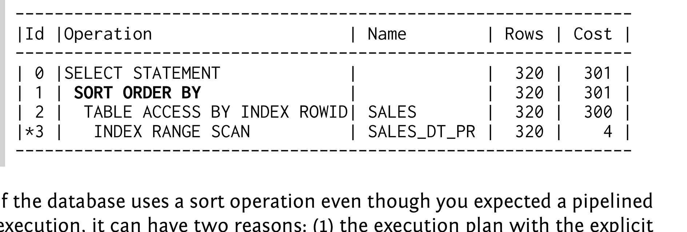
Nếu database dùng sort operation dù bạn kỳ vọng pipelined execution, có thể có 2 lý do: (1) execution plan với explicit sort operation có cost value tốt hơn; (2) index order trong scanned index range không tương ứng với order by clause.
Một cách đơn giản để phân biệt 2 trường hợp là dùng full index definition trong order by clause — tức là điều chỉnh query theo index để loại bỏ nguyên nhân thứ hai. Nếu database vẫn dùng explicit sort operation, optimizer ưu tiên plan này do cost value; nếu không, database không thể dùng index cho order by clause ban đầu.
Trong cả 2 trường hợp, bạn có thể tự hỏi liệu có thể đạt pipelined order by execution hay không và đạt bằng cách nào. Để làm vậy, bạn có thể execute query với full index definition trong order by clause rồi inspect result. Bạn thường sẽ nhận ra perception của mình về index là sai, và index order thực tế không đúng như order by clause ban đầu yêu cầu, nên database không thể dùng index để tránh sort operation.
Nếu optimizer ưu tiên explicit sort operation vì cost value, thường là do optimizer chọn execution plan tốt nhất cho full execution của query. Nói cách khác, optimizer chọn execution plan nhanh nhất để lấy record cuối cùng. Nếu database nhận ra application chỉ fetch một vài row đầu, nó có thể chuyển sang ưu tiên indexed order by. Chapter 7, “Partial Results”, giải thích các optimization method tương ứng.
Database có thể đọc index theo cả 2 direction. Điều đó có nghĩa pipelined order by cũng khả thi nếu scanned index range ở đúng order ngược với order được chỉ định trong order by clause. Dù modifier ASC và DESC trong order by clause có thể ngăn pipelined execution, hầu hết database cung cấp cách đơn giản để đổi index order, khiến index có thể dùng cho pipelined order by.
Ví dụ sau dùng index theo reverse order. Nó trả về các sale kể từ yesterday, được order theo date giảm dần và PRODUCT_ID giảm dần.
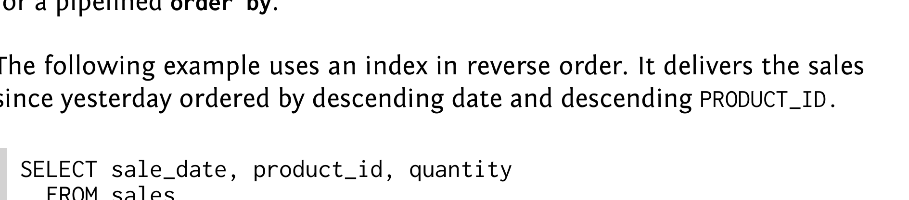
Execution plan cho thấy database đọc index theo descending direction.
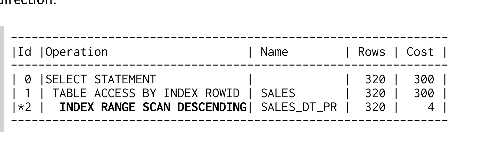
Trong trường hợp này, database dùng index tree để tìm matching entry cuối cùng. Từ đó, nó đi theo leaf node chain “lên trên” như trong Figure 6.2. Sau cùng, đó là lý do database dùng doubly linked list để xây dựng leaf node chain.
Đương nhiên, điều quan trọng là scanned index range phải ở đúng order ngược với order mà order by clause cần.